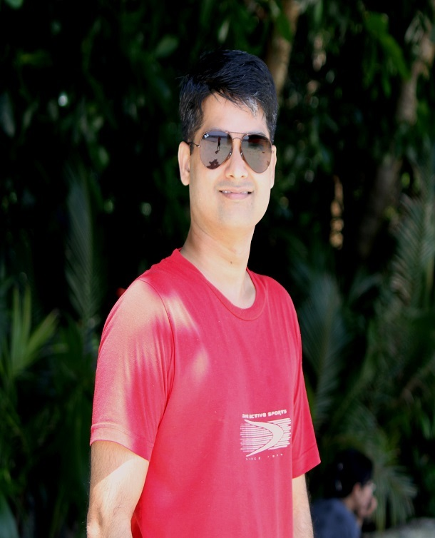

Profile
Technology leadership grounded in delivery—and a commitment to community and public service.

Executive technology & community leader
With over 20 years in technology and operations, I specialise in designing, scaling, and managing complex infrastructure landscapes across AWS, Oracle Cloud Infrastructure, and on‑premise environments. I have led large, multi‑stakeholder programs for Tier‑1 telecommunications organisations, ensuring stability, security, and measurable business value.
As a Program Manager and infrastructure leader, I work at the intersection of technology, business, and people—translating strategic objectives into executable roadmaps, and aligning delivery teams, vendors, and executive stakeholders around shared outcomes.
Beyond the corporate sphere, I serve as a Peace Commissioner and have been active in politics with Fine Gael in Ireland, reflecting a longstanding commitment to community, public service, and ethical leadership.
I am particularly interested in roles where technology modernisation, operational excellence, and community impact converge—whether as an executive leader, advisor, or board member.